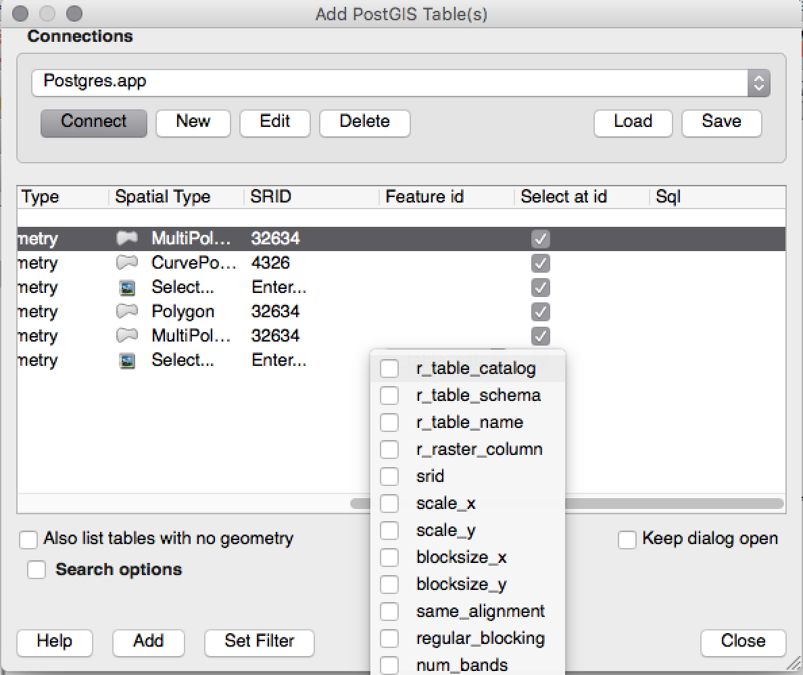
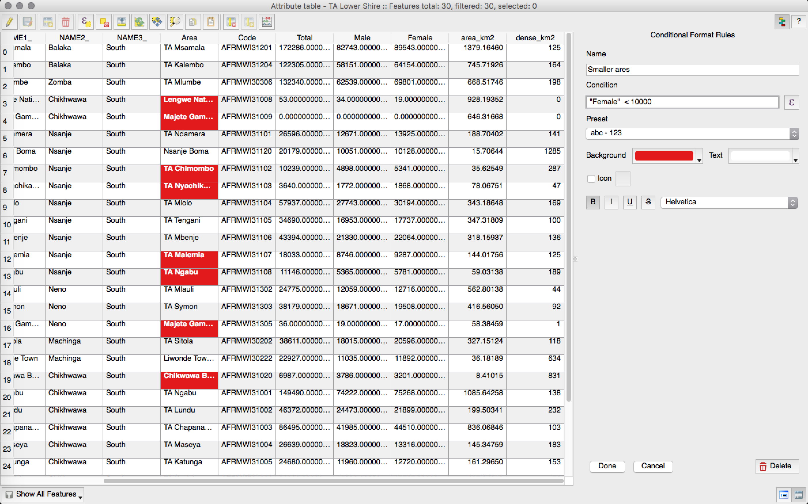
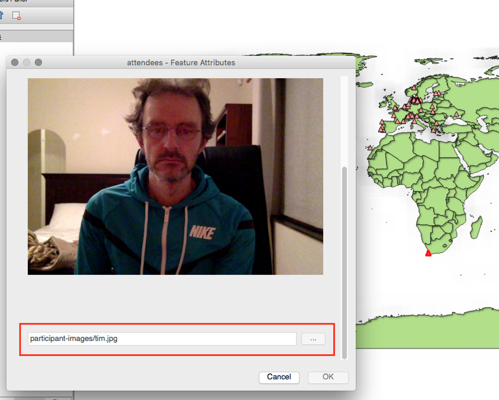
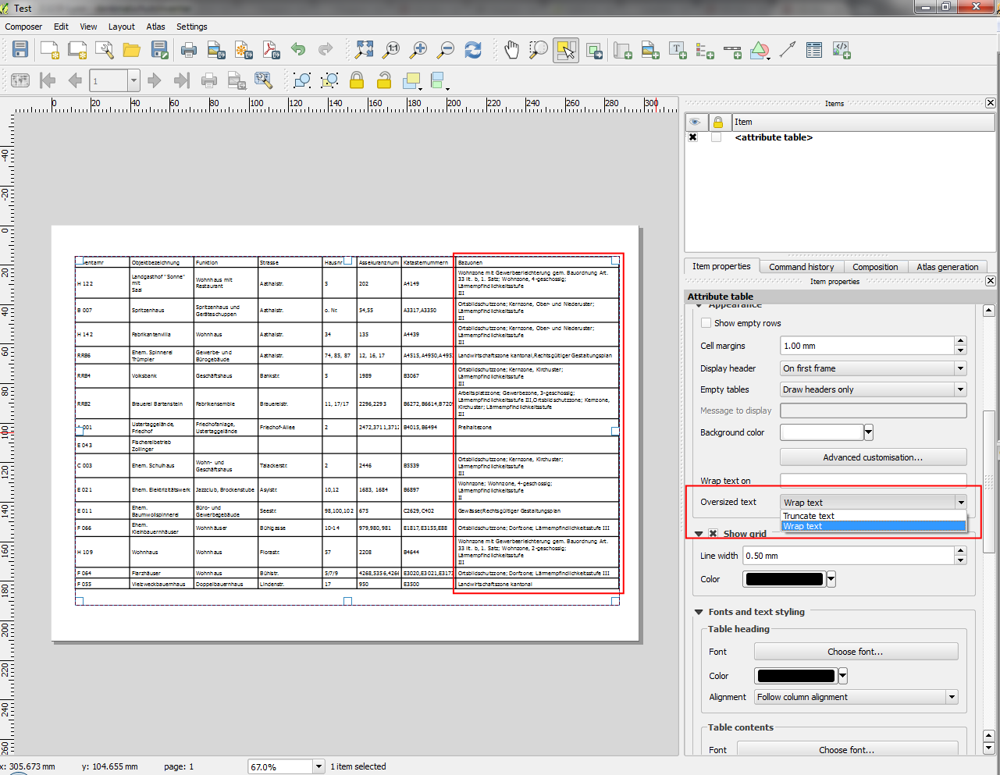
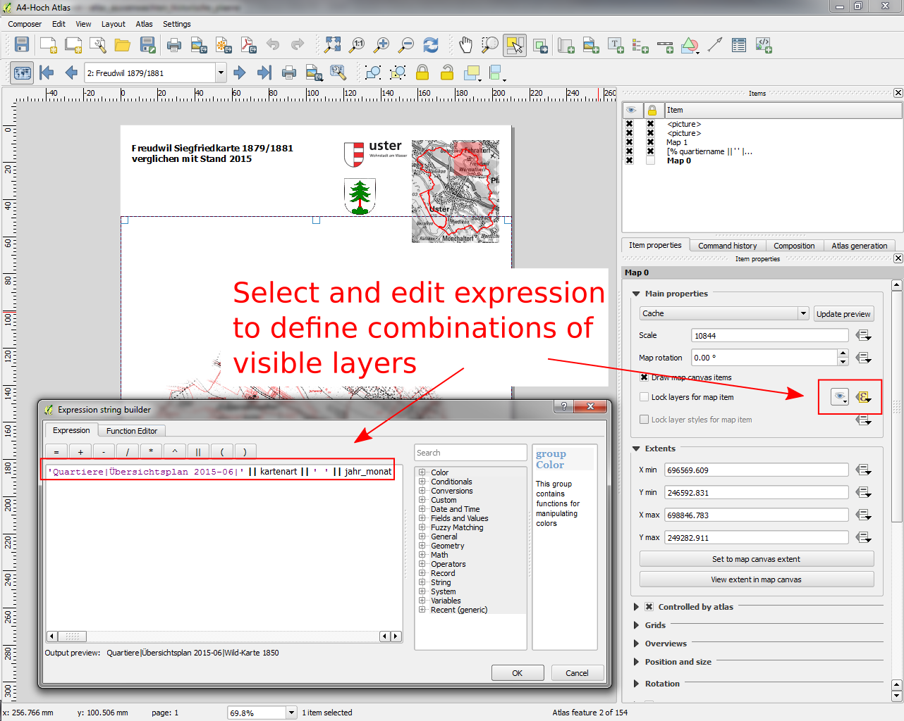
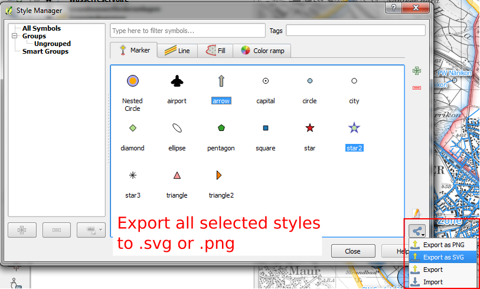
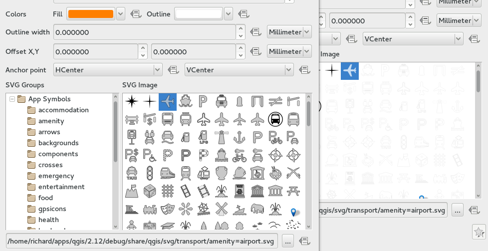
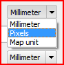

QGIS 2.12の変更履歴¶

これはQGISの次のリリースの変更ログです。バージョン2.12.0「Lyon」 - デベロッパー向けのホスト都市が2012年4月に出会います。
QGIS 2.12 『Lyon』 の新しい機能
これは4カ月ごとのリリースシリーズの次のリリースです。 これは、私たちが取り組んできた新機能へのアクセスを提供し、QGIS開発の「最先端」を表しています。
QGISの「Lyon」には、素晴らしい新機能が満載されています。 特別なハイライトは、ルールベースのラベル付け、属性テーブルのルールベースのスタイリング、高度なジオメトリチェッカーのサポート、カーブベースのジオメトリのデジタル化、認証管理の向上などです。 QGIS 2.12には、多くのバグ修正とメモリリークがあります。 QGIS 2.12で提供される機能は、次のLTRリリース（2016年にリリース予定）に含まれているため、このリリースを使用すると、次のLTRに移行する新しい機能をテストする素晴らしい機会が提供されます。
新しい機能がソフトウェアに追加されるたびに、新しいバグが発生する可能性があります。このリリースで問題が発生した場合は、 `QGISバグトラッカー<http://hub.qgis.org>`__ にチケットを提出してください。 新しい機能をユーザーに展開することについてもっと慎重にしたい運用環境で作業している場合は、QGISのLTR（Long Term Release）バージョンも提供しています。 現在のLTRはバージョン2.8.3であり、 download.qgis.org から入手できます。
謝辞
私たちは、開発者、ドキュメント作成者、テスター、そして時間と労力をボランティアしている（あるいは人々に資金を提供する）多くの人々に感謝したいと思います。
From the QGIS community we hope you enjoy this release! If you wish to donate time, money or otherwise get involved in making QGIS more awesome, please wander along to qgis.org and lend a hand!
最後に、このプロジェクトに提供した貴重な財政支援について、公式スポンサーに感謝したい。
- ゴールドスポンサー: Asia Air Survey, Japan
- SILVER Sponsor: AGH University of Science and Technology, Krakow, Poland
- SILVER Sponsor: State of Vorarlberg, Austria
- SILVER Sponsor: Office of Public Works, Ireland, Ireland
- SILVER Sponsor: Sourcepole AG, Switzerland
- BRONZE Sponsor: Lutra Consulting, UK
- BRONZE Sponsor: WhereGroup GmbH & Co. KG, Germany
- BRONZE Sponsor: Nicholas Pearson Associates, UK
- BRONZE Sponsor: QGIS Poland, Poland
- BRONZE Sponsor: www.terrelogiche.com, Italy
- BRONZE Sponsor: GeoSynergy, Australia
- BRONZE Sponsor: Gaia3D, South Korea
- BRONZE Sponsor: Royal Borough of Windsor and Maidenhead, UK
- BRONZE Sponsor: Chartwell Consultants Ltd, Canada
- BRONZE Sponsor: Trage Wegen vzw, Belgium
- BRONZE Sponsor: GFI - Gesellschaft fr Informations technologie mbH, Germany
- ブロンズスポンサー：GKGカッセル、ドイツ（Dr.Ing。Claas Leiner）、ドイツ<http://www.gkg-kassel.de/> `__
- BRONZE Sponsor: GIS-Support, Poland
- BRONZE Sponsor: ADLARES GmbH, Germany
- BRONZE Sponsor: www.molitec.it, Italy
- BRONZE Sponsor: www.argusoft.de, Germany
- BRONZE Sponsor: Customer Analytics, USA
- BRONZE Sponsor: Avioportolano Italia, Italy
- BRONZE Sponsor: Faculty of Geology, Geophysics and Environmental Protection, AGH, University of Science and Technology, Poland
- BRONZE Sponsor: Urbsol, Australia
- BRONZE Sponsor: MappingGIS, Spain
- BRONZE Sponsor: GIS3W, italy
A current list of donors who have made financial contributions large and small to the project can be seen on our donors list. If you would like to become and official project sponsor, please visit our sponsorship page for details. Sponsoring QGIS helps us to fund our six monthly developer meetings, maintain project infrastructure and fund bug fixing efforts.
QGISはフリーソフトウェアであり、使用するために何かを支払う義務はありません。実際、財務的または社会的地位にかかわらず、広範囲にわたる人々にそれを使用するよう奨励したいと考えています。すべての人類にとってより良い社会をもたらします。
一般情報¶
機能: 新しいようこそ画面¶
空のプロジェクトやキャンバスの代わりに、QGISでの最近のプロジェクトをリストで表示すると共にサムネイル画像出すことで、最後に実施していたプロジェクトに素早く簡単に戻れるようになります。
この機能の開発者: Matthias Kuhn at OPENGIS.ch

機能：コード品質の継続的改善¶
アドレスサニタイザライブラリの使用により、何百ものメモリリークが特定され、修正されています。Coverity Scanを使用した自動コードスキャンは潜在的な問題の特定に定期的に使用されており、Coverityの欠陥密度は1000行のコードあたりわずか0.02個の欠陥で非常に低くなりました。自動化された単体テストのライブラリも2.12の間に大幅に増加し、より多くの回帰が特定され、直ちに修正されました。2.12では、OSXでの継続的なテストも追加したので、すべてのコミットがLinuxとOSXの両方のプラットフォームでユニットテストスイートに対してテストされました。

機能: 高度な設定エディタ¶
設定ダイアログに新しいパネルが追加されました。このパネルでは、あなたのプロフィールですでに定義されているオプションを編集できます。これは、あなたが何をしているのかを完全に理解することなくこれらの設定を変更すると、QGISで予期しない動作が発生する可能性があるため、パワーユーザーのみを対象としています。
この機能の開発者: Matthias Kuhn at OpenGIS

機能：相互に排他的なレイヤーツリーグループ¶
この機能を使用すると、グループ内の1つのレイヤだけがいつでも表示できるレイヤーグループを作成できます。この機能は、レイヤーツリービューのコンテキストメニューでグループごとに個別に切り替えることができます。
この機能は以下によって開発されました： Gut3W <http://www.gis3w.it/>への下請けの `Lutra Consulting <http://www.lutraconsulting.co.uk/>`のMartin Dobias __
**この機能は以下によって資金提供されました：**トスカーナ地方（イタリア） - SITA（CIG：63526840AE）

機能：式ウィジェット内のフィールド値のフィルタリング¶
フィールドの値を使用する式を作成するときに、フィールド値プレビューパネルをフィルタリングできるようになりました。
この機能は、によって開発されました： Salvatore Larosa

機能: ユーザインターフェースのテーマ変更をサポート¶
QGIS 2.12は、ウィンドウの背景、ボタンなどの外観をカスタマイズするために使用できるユーザーインターフェイステーマサポートをサポートしています。デフォルトでは、** Default および Night mapping **の2つのテーマが出荷されます。後者は、明るいテーマが目の緊張を引き起こすことが分かっている人が好むかもしれない暗いテーマです。ちょっとしたCSSを知っているなら、あなた自身のカスタムテーマをかなり簡単に作成することもできます…
テーマ支援の詳細については、 Nathan Woodrowのブログ記事<http://nathanw.net/2015/08/29/ui-theme-support-now-core-in-qgis/> __を参照してください。
この機能は、以下によって開発されました： Nathan Woodrow <http://nathanw.net/> __

機能: 新しい関数の追加（v2.12）¶
「ファジーマッチング」機能のセットが追加されました。これらの関数には、2つの文字列の類似性を検索する機能と文字列間の発音的な一致を行う機能があり、指定された文字列に「ほぼ一致する」レコードのフィルタを実行できます。
さらに多くのジオメトリベース機能が追加されました.以下のものがあります:
num_points(geom)ジオメトリ内のノード数を計算する- すべてのジオメトリオブジェクトの面積、長さ、および周長を計算するための、 「area（geom）」、 「length（geom）」および 「perimeter（geom）」 以前は、現在の地物のジオメトリの面積、長さ、および周囲の計算のみが可能でした。
- ジオメトリから最初の、最後の、そして番号の付いたポイントを検索するための `` start_point（geom） ``、 `` end_point（geom） ``、 `` point_n（geom、n） ``
make_point(x,y), 手動でポイントジオメトリを作成する機能- ポイントジオメトリのx座標とy座標、または非ポイントジオメトリの重心x / yを返す `` x（geom） ``、 ``（geom） ``関数
新しい `` project_color``関数が追加されました。プロジェクトのカラースキームから名前で色を取得することができます。これにより、シンボルやラベルのコンポーネントの色をプロジェクトの配色の色にバインドできる「リンクされた色」を作成できます。スキームの色を更新すると、リンクされたすべての色が自動的に更新されて一致します。
さらにいくつかのとても便利な式が expressions+プラグインから移植されました。以下のものです:
color_part: 色から特定の色成分 (例 赤, 色相, アルファ) を検索できるようにしましたset_color_part:色のアルファ値（不透明度）を変更するなど、特定の色成分をオーバーライドできます。day_of_week: 数値の日付から曜日を返します
さらに、表現機能の文脈ヘルプは、読みやすくするために改善されています。

機能: 式の中で使用する変数¶
式で使用するカスタム変数を定義できるようになりました。変数は、アプリケーションのグローバルレベル、プロジェクトレベル、レイヤレベル、およびコンポジションレベルで定義できます。CSSのカスケード規則と同様に、変数は上書きすることができます。たとえば、プロジェクトレベルの変数は、アプリケーションレベルの変数を上書きします。これらの変数を使用して、テキスト文字列やその他のカスタム式を構築できます。たとえば、このコンテンツを含むラベルを作成するコンポーザーでは、次のようになります。
この地図はQGIS [％@qgis_version％]を使用して作成されました。 `` ``この地図のプロジェクトファイルは次のとおりです：[％@project_path％]
Will render the label like this:
``この地図はQGIS 2.12を使って作ったものです。 `` `この地図のプロジェクトファイルは/ gis / qgis-user-conference-2015.qgs``です。
設定 -> オプション メニューからグローバル変数を管理したり、独自のカスタム変数を追加することを含め、 Project properties からプロジェクトレベル変数を管理できます。
This feature was developed by: Nyall Dawson

解析ツール¶
機能：識別ツールの派生フィールドに頂点数を追加¶
ライン地物で識別ツールを使用すると、地物の頂点の数が追加の派生属性として表示されるようになりました。
機能：ラスター整列ツール¶
qgis_analysis ライブラリのこの新しいツールは 多くのラスタを入力可能にします,そして以下の機能があります:
- 同じCRSに再投影する
- 同じセルサイズにリサンプルし、グリッド内でオフセットする
- 関心のある領域をクリップします
- 必要に応じて値を再スケールする
この機能は、以下によって開発されました： Kutoza <http://kartoza.com/> __に下請けした Lutra Consulting <http://www.lutraconsulting.co.uk/> `のMartin Dobias
** この機能は以下の方の資金提供で開発されました:** DFAT InaSAFE プロジェクト <http://inasafe.org/> 向け __

機能: Geometry CheckerプラグインとGeometry Snapperプラグイン¶
2つの新しいプラグイン（プラグインマネージャーで手動で有効にする必要があります）は、ジオメトリの検証と修正に使用できます。**ジオメトリチェッカー**プラグイン（右図）は、さまざまなタイプのシステマティックエラーのベクタデータセットをチェックして修正し、それらを解決しようとします。エラーを解決した後で、エラーリストを自動的に更新することにより、あるエラーを修正しても他のエラーも解決すると、すべてのエラーが問題リストから削除されます。
**ジオメトリスナッパー**ツールを使用すると、1つのベクターレイヤーのエッジと頂点を、ユーザー定義の許容差を使用して2番目のレイヤーのエッジと頂点に揃えることができます。
この機能は以下によって開発されました： Sandro Mani、 Sourcepole AG <http://www.sourcepole.ch/> __
この機能は以下によって資金提供されました： SolothurnのCanton <http://www.sogis.so.ch/> __

アプリケーションとプロジェクトオプション¶
機能:暗号化パスワードの管理¶
QGIS 2.12は新しい認証システムを導入しました（ PR 2330、QEP 14 <https://github.com/dakcarto/QGIS-Enhancement-Proposals/blob/auth-system/qep-14-authentication-system.rst> __ ）。含まれる内容は次のとおりです。
- SQLiteデータベースに保存されたマスターパスワードで暗号化された認証設定
- 認証メソッドプラグインアーキテクチャ(データプロバイダに似ている仕組み)
- 基本認証メソッドプラグイン
- 基本プラグインにPostGISとOWSプロバイダ接続が統合されています
- PostGISとOWSの開発者と連携したベーシックな統合プラグイン
- SSLサーバー接続の設定（SSL接続エラーの例外またはカスタム設定を保存する）
PKI認証関連：
- 余分な認証局、中間証明書発行者、個人識別バンドルをインポートする
- Firefoxのような証明書コンポーネントを管理する
- ディスク上のPEMおよびPKCS＃12バンドル用の認証メソッドプラグイン、および保存された個人識別情報用のプラグイン
- OWS接続プロバイダが統合されました(PostGISと他のデータベースについてはも少し作業が必要です)
ネットワークドライブのセットアップを含む共有プロジェクトのシナリオでは、認証構成（authcfg）IDをユーザー間で共有されるものに編集できます。
authcfg IDはプロジェクトファイルに埋め込まれているので、各ユーザーは、ちょうどそのプロジェクトファイルに同じIDに（コンフィグの作成時または後に）IDを編集し、そのリソースのための彼らの特定の資格情報を持つ認証設定を行う必要があります。リソースがロードされると、使用される認証方法のそれぞれの資格情報だけで、すべてのQGISで同じ設定が照会されます。
「バッド・レイヤーの処理」ダイアログでは、ダイアログ内でauth configsを追加/編集/削除し、一致するようにデータ・ソースURIを更新できます。したがって、共有プロジェクトのシナリオでは、ユーザーは、プロジェクトのロード時に、適切な新しいauth configをすぐに追加することができます（正確には、authcfg IDを使用する必要があります）。
現在、マスターパスワードの自動設定は、QgsAuthManager :: instance（） - > setMasterPassword（ 「mypassword」、true） `` QgsAuthManager :: instance（）の呼び出しを使用して、起動設定でPythonまたはカスタムC ++プラグインを使用して設定できます。 、またはQGIS _AUTH _PASSWORD _FILE環境変数を使用して、マスター・パスワードを持つファイルへのパスを設定します。
注： サーバーの場合は、QGIS _AUTH _DB _DIR _PATHを使用してqgis-auth.dbディレクトリのパスを設定し、QGIS _AUTH _PASSWORD _FILEを使用してファイルのパスを設定することもできますサーバー上のマスターパスワード。
PKIのサンプルドキュメント：https://github.com/dakcarto/QGIS-Enhancement-Proposals/blob/auth-system/extras/auth-system/pkiuser.rst
この機能は次の方によって開発されました: Larry Shaffer
この機能は次の方の資金提供で開発されました: Boundless Spatial, Inc.

ブラウザ¶
機能：ブラウザでのPostGIS接続の改善¶
QGISブラウザでは、スキーマの作成、名前変更、削除、レイヤの名前の変更と切り捨て**、およびあるスキーマから別のスキーマへのテーブルのコピー**など、PostGIS接続の追加機能がサポートされています。 。
This feature was developed by: Nyall Dawson
** 次の方がテーブルをコピーしました:** Jürgen Fischer at norBIT GmbH

データプロバイダ¶
機能:PostGISプロバイダの改良¶
PostGISプロバイダに次のような改善が加えられました。
- PostGISレイヤのルールベース描画機能のパフォーマンス改善
- ビューにおける複合キーのサポートが追加されました
** 複合キーは次の方が開発しました:** Jürgen Fischer at norBIT GmbH

データマネジメント¶
機能:DBManagerの改良¶
DBマネージャーツールにはいくつかの改善点があります。
- DBマネージャーでは、以前のバージョンで使用可能だったShapefileのみではなく、OGRでサポートされているデータ形式にデータをエクスポートできるようになりました。
- Oracle SpatialはDBManagerでサポートされるようになりました
- テーブルにデータをインポートする際には、新しいものをインポートする機能**を選択するだけで、インポートする項目を制限することができます。
- 新しいクエリウィンドウがタブとして作成され、ダイアログの数が削減されました

機能：属性テーブルセルの条件付き書式設定¶
これは、QGISのアトリビュートテーブルレンダリングのサポートに対する大きな改善点です。ルールに従って表のセルをスタイルすることができます。たとえば、50,000未満の人口を持つすべてのセルを赤で色付けできます。このオプションは、属性テーブルウィンドウの右上にあるテーブルツールバーの新しいアイコンで有効になります。この機能の詳細については、 `Nathan Woodrowのブログ記事<http://nathanw.net/2015/08/20/mixing-a-bit-of-excel-into-qgis-conditional-formatted-table-cells/ > `__。
この機能は、以下によって開発されました： Nathan Woodrow <http://nathanw.net/> __

機能:ウィジェット内での相対パスのサポート¶
次の編集ウィジェットタイプの場合：
- ファイル名
- 写真
- ウェブビュー
ファイルブラウザで選択されたパスが.qgsプロジェクトファイルと同じディレクトリにある場合、パスは相対パスに変換されます。これにより、マルチメディア情報が添付されたQGISプロジェクトの移植性が向上します。
この機能の開発者: Matthias Kuhn at OpenGIS
** この機能は次の方の資金提供で開発されました:** Alta ehf

デジタイジング¶
特集：デジタル化の改善¶
QGIS 2.10では、QGISの新しいジオメトリアーキテクチャがあると述べましたが、すべての機能がデジタル化ツールでサポートされているわけではありません。QGIS 2.12では、カーブ/ 『円環式文字列’の作成をサポートしています。曲線をサポートするデータプロバイダ（PostGIS、GML、WFSなど）を使用する必要があることに再度注意してください。デジタル化ツールのこれらの改良点もQGIS 2.12で追加されました。
- 2点と半径を持つ円形の文字列を追加するツール
- 開始点,カーブポイント,終了点を指定して円形の文字列を追加するツール
- 新しい機能の描画をキャンセルするエスケープを許可する
- ノードツールを使用して編集するときにノードテーブルを表示します。ノードの正確なx座標とy座標、z値とm値（レイヤータイプに応じて）を手動で入力できます。
さらに、zまたはm次元を含むレイヤーで正しく機能するように、より多くのジオメトリの編集および修正ツールが更新されました。
** この機能は次の方が開発しました:** Marco Hugentobler at Sourcepole AG
この機能は以下によって資金提供されました： SolothurnのCanton <http://www.sogis.so.ch/> __

ラベリング¶
機能: 「点の周り」 モード時のデータによる象限指定¶
ポイントラベルがAround Point配置モードに設定されているときにデータ定義象限を指定できるようになりました。これにより、特定のラベルの象限配置を手動で変更し、残りのラベルを自動配置に戻すことができます。
詳細は こちらの記述を 参照して下さい.
This feature was developed by: Nyall Dawson

機能：ポリゴンの内側に収まるラベルのみを描く¶
ポリゴンのレイヤーにオプションが追加され、ポリゴンの地物内に完全に収まるラベルのみが描画されます。
This feature was developed by: Nyall Dawson

機能：ラベルの障害の優先順位を制御する¶
2.12では、障害のラベル付けの優先順位を指定できるようになりました。これにより、ラベルを他のレイヤーではなく特定のレイヤーから地物をオーバーラップさせることができます。優先度は、特定の機能が他の機能よりもカバーされる可能性があるように定義されたデータであってもよい。データ定義式またはフィールドを使用して、レイヤー内の特定の地物がラベルの障害物として機能するかどうかを制御することもできます。
This feature was developed by: Nyall Dawson

Feature：ポリゴンレイヤーが障害物となる様子を制御する新しいオプション¶
ポリゴンレイヤーの地物が重複しないようにラベルを配置する方法を制御する新しいオプションが追加されました。オプションは、ポリゴンの内側にラベルを配置したり、ポリゴンの境界上に配置したりしないようにすることです。境界線上にラベルを配置することを避けることは、機能が領域全体をカバーする領域境界レイヤーに役立ちます。この場合、これらの地物内にラベルを配置することは避けられません。地物の境界に地物を配置することを避ける方がはるかに優れています。その結果、この状況ではラベルの地図作成上の配置が向上します。
詳細は こちらの記述を 参照して下さい.
This feature was developed by: Nyall Dawson

機能：ラベル優先度に対するデータ定義制御¶
頻繁に要求されるこの機能により、ユーザーは個々のラベルの優先順位を設定できます。過去のリリースでは、QGISではレイヤー全体のラベル優先度を設定できましたが、レイヤー内の地物の優先度を制御するオプションはありませんでした。これで、データ定義の式またはフィールドを使用して、ある地物をレイヤー内の他の地物に優先付けすることに優先順位を付けることができます。
詳細は、この記事<http://nyalldawson.net/2015/07/recent-labelling-improvements-in-qgis-master/> `__を参照してください。
This feature was developed by: Nyall Dawson

機能:障害物のみのレイヤ用オプション¶
これにより、ユーザーは他のレイヤーのラベルの障害物としてレイヤーを設定することはできません。これは、ラベル付けされていないレイヤーが他のレイヤーのラベルの障害物として機能する可能性があることを意味し、障害物レイヤーの地物にラベルを貼り付けるのをやめ、ラベルと地物の重なりを防止してラベルの自動配置を改善します他のレイヤーから。
スクリーンショットでは、Streetsに[このレイヤーの地物を他のレーベルに隠すことを拒否]オプションが有効になっていることがわかります。 このように、ポリゴンの幾何形状から得られた赤のラベルは、通りの軸と交差しないように配置されます。 適切な結果を得るには、ポリゴンレイヤーで「水平」または「フリー」を有効にする必要があります。
ラベル設定の「レンダリング」タブで、「ラベルが機能をカバーしないようにする」チェックボックスを有効にすることによって、レイヤーにラベルを付けることも、障害物のレイヤーとして機能させることも可能であることに注意してください。
詳細は こちらの記述を 参照して下さい.
This feature was developed by: Nyall Dawson

機能：ルールベースのラベリング¶
ラベルの配置やスタイリングをさらに細かく制御できるように、規則を使用して地物上のラベルのスタイルを設定できるようになりました。 規則に基づく地図作成と同様に、ラベル付け規則をネストすることで、非常に柔軟なスタイル設定オプションを使用できます。 たとえば、レンダリングされる地物のサイズに基づいてラベルをレンダリングできます（スクリーンショットに示すように）。
詳細は blogpost <http://www.lutraconsulting.co.uk/blog/2015/10/25/rule-based-labeling/> __を参照してください。
この機能は以下によって開発されました： Gut3W <http://www.gis3w.it/>への下請けの `Lutra Consulting <http://www.lutraconsulting.co.uk/>`のMartin Dobias __
**この機能は以下によって資金提供されました：**トスカーナ地方（イタリア） - SITA（CIG：63526840AE）

マップコンポーザ¶
機能：アトラスナビゲーションの改善¶
フィールドまたは式をアトラスの「ページ名」として設定できるようになりました。アトラスのツールバーにページ番号のコンボボックスが追加されました。そこには利用可能なページ番号と名前のリストが表示されます。これにより、アトラス内の特定のページに直接ジャンプすることができます。
ページ名は、シンボル名やラベル式内でも使用でき、ページ名に基づいてアトラス機能の高度なスタイリングを可能にします。
This feature was developed by: Nyall Dawson

機能：グリッドアノテーションのカスタムフォーマット¶
Composerのマップグリッドアノテーションは、エクスプレッションエンジンを使用して評価されるカスタムフォーマットでフォーマットできるようになりました。今あなたはマップが必要とするどんな難解なグリッドの番号付けフォーマットを利用しますか？
This feature was developed by: Nyall Dawson

機能：コンポーザー属性テーブルの複数行テキスト処理と自動テキスト折り返し¶
Composer属性テーブルには、複数行の文字列を完全にサポートするようになりました。特定の文字にテキストを折り返すオプションや、列のサイズに合わせてテキストの折り返しを自動的に計算するオプションとともに、セル内のテキストの垂直方向の配置の制御も追加されました。自動行の高さで自動テキスト折り返しを適用するには、列幅を固定サイズに設定します。
This feature was developed by: Nyall Dawson
この機能は以下によって資金提供されました： City of Uster <http://gis.uster.ch/> __

機能：セルの背景色の高度なカスタマイズ¶
この変更により、ユーザーは、コンポーザー属性テーブル内の行と列、最初/最後の行/列、ヘッダー行を交互に変える色を設定できます。
この機能は次の方によって開発されました: Nyall Dawson
** この機能は以下の方の資金提供で開発されました:** Ville de Morges

機能：コンテンツにフィットするページを追加するオプションとコンテンツへのエクスポートをトリミングするオプション¶
コンポジションパネルに新しいオプションが追加され、コンポジションの内容に合わせてサイズを変更し、必要に応じて追加の余白を追加しました。
コンポーザの書き出しは、その内容に切り取ることもできます。このオプションを選択すると、コンポーザが出力する画像に、コンテンツ付きのコンポジションの領域のみが含まれます。必要に応じて、項目境界の周りに余白を追加するオプションもあります。
コンポジションに1つのページが含まれている場合は、コンポジションにすべての内容を含めるように出力がサイズ調整されます。複数ページのコンポジションの場合、各ページはクロップされ、そのページの項目だけが含まれます。
これを容易にするための新しい画像書き出しオプションダイアログが追加されました。これには、印刷解像度や書き出した画像のサイズをオーバーライドするための便利なショートカットも含まれています。
スポンサー: NIWA
This feature was developed by: Nyall Dawson

機能：ベクターレイヤーをラスター画像としてレンダリングする¶
レイヤープロパティの下に新しいオプションが追加され、レンダリングタブがラスタとしてレンダリングされます。極端に細かいレイヤー（ノード数が多いポリゴンレイヤーなど）は、エクスポートされたファイルにすべてのノードが含まれているため、PDF / SVG形式のコンポーザーのエクスポートを巨大にする可能性があります。これにより、生成されたファイルの処理速度が非常に遅くなり、外部プログラムで開くこともあります。これで、これらのレイヤーをレイヤー単位でラスタライズすることができ、エクスポートされたファイルにこれらのレイヤーに含まれるすべてのノードを含める必要がなくなります。最終的には、ファイルサイズが小さくなり、PDF / SVGが開きやすくなります。
This feature was developed by: Nyall Dawson

機能：地図レイヤーとスタイルプリセットのデータ定義コントロール¶
マップレイヤーとスタイルプリセットがコンポーザーマップに表示されるように、新しいデータ定義コントロールが追加されました。マップレイヤのデータ定義式は|になります。マップに表示されるレイヤー名の区切り（パイプ）区切りリスト、またはスタイルプリセットデータ定義式は、既存のスタイルプリセットの名前になります。
マップレイヤーのこのコントロールを使用すると、マップレイヤーの変更ではなくアトラスページ間でマップレイヤーを変更する「レイヤーベース」アトラスが可能になります。一例は、さまざまな行政単位でのアトラスのループであり、同時にいくつかの歴史的な地図または空中像のループです。
This feature was developed by: Nyall Dawson
この機能は以下によって資金提供されました： City of Uster <http://gis.uster.ch/> __

機能：ビューを非表示にするオプション/エクスポート¶
コンポジションの編集や書き出し中にページの表示を非表示にするオプションが追加されました。このオプションは、印刷用ではなく、あらかじめ設定されたページサイズに制限されていないコンポジションに役立ちます。ページを非表示にして、ページの境界線を目立たせることなく、任意の方法でアイテムを追加したり、サイズを変更したりすることができます。
スポンサー: NIWA
This feature was developed by: Nyall Dawson
プラグイン¶
機能:GRASS プラグインのアップデート¶
GRASSプラグインは、GRASS 7のサポートを有効にするように更新されました。GRASSレイヤーは、QGISブラウザまたはブラウザパネルからブラウズしてロードできます。GRASSベクターデータはQGIS内で直接編集できます。このプロジェクトには、次の作業パッケージが含まれています。
- プラグインライブラリのアップグレードとマルチバージョンビルド
- QGISブラウザとブラウザパネルの統合
- データ解析を可能にするマップセット、モジュール、シェルのサポート
- ベクター編集
GRASS 6とGRASS 7の両方のユーザーにとって、GRASSとQGISの統合はずっとシームレスです。QGISブラウザパネルで直接GRASSレイヤーを作成し、標準のQGISスタイリングツールを使用してGRASSベクターレイヤーをスタイル設定し、使い慣れたQGISデジタイジングツールを使用して、新しいベクタージオメトリをGRASS地図セットに作成できます。
QGIS GRASS Plugin Upgradeプロジェクトページ<http://www.gissula.eu/qgis-grass-plugin-crowdfunding/> __と `progress report <http://www.gissula.eu/qgis-grass- plugin-crowdfunding / progress.html> `__
** この機能は次の方によって開発されました:** Radim Blazek
**この機能は以下によって資金提供されました：**群集資金提供、 `プロジェクトページ<http://www.gissula.eu/qgis-grass-plugin-crowdfunding/>参照__

プログラマビリティ¶
機能: マップツールが app->gui に移動しました¶
この変更により、PyQGISスクリプトやPythonプラグインからマップツールを再利用することができます。
この機能の開発者: Matthias Kuhn at OpenGIS
** この機能は次の方の資金提供で開発されました:** SIGE
機能: `with edit(layer):` を利用した編集¶
例:
from qgis.core import edit
with edit(layer):
f=layer.getFeatures().next()
f[0]=5
layer.updateFeature(f)
これにより、最後に自動的にcommitChanges（）が呼び出されます。例外が発生すると、すべての変更がロールバック（）されます。
この機能の開発者: Matthias Kuhn at OpenGIS
機能: ラベリングエンジン用新API(QgsLabelingEngineV2)¶
考え方は、エンジンをQgsPalLabelingの実装と比較してより柔軟にすることです。
- エンジン自体からのテキストラベル/図の抽象的な扱い
- レイヤーごとに複数のタイプのラベルを許可する
- カスタムラベルプロバイダをサポートします（たとえば、プラグインによって実装されます）
- ラベリングエンジンをマップレンダリングエンジンから独立させる
- ラベリングエンジンとそのコンポーネントの自動テストを容易にする
詳細は blogpost <http://www.lutraconsulting.co.uk/blog/2015/10/25/rule-based-labeling/> __を参照してください。
この機能は以下によって開発されました： Gut3W <http://www.gis3w.it/>への下請けの `Lutra Consulting <http://www.lutraconsulting.co.uk/>`のMartin Dobias __
**この機能は以下によって資金提供されました：**トスカーナ地方（イタリア） - SITA（CIG：63526840AE）
機能: 外部エディタによるスクリプトのオープン¶
Pythonistasは喜んでいます。コンソールに追加された新しいボタンを使用して、外部エディタでスクリプトを開くことができます。
この機能は、以下によって開発されました： Nathan Woodrow <http://nathanw.net/> __

機能:PyQGISプログラム用の新しいクラス¶
PygGISスクリプトが2.12で追加された新しいファジーマッチングアルゴリズムを利用できるようにする新しいクラスQgsStringUtilsが追加されました。これらの関数には、2つの文字列間のLevenshtein編集距離を検索し、文字列のsoundex音声表現を計算する関数が含まれています。これらのアルゴリズムはパフォーマンスのために高度に最適化されているため、数百万の文字列にわたってファジーマッチングを開始する準備ができています。
This feature was developed by: Nyall Dawson
QGISサーバ¶
機能:QGISサーバPython API¶
QGIS Serverは、初期（しかし成長している）APIとPythonバインディングを持つライブラリとしてパックされています。新しいAPIを使用して、サーバーのメインコンポーネントとサーバープラグインの一連のPythonテストを行います。Pythonからサーバを呼び出すのは簡単です：
from qgis.server import QgsServer
headers, body = QgsServer().handleRequest(my_query_string)
さらに詳しい情報は次のページを参照して下さい `this article <http://www.itopen.it/qgis-server-binding-news/`_>_
この作品は It’pen <http://www.itopen.it/>でアレッサンドロ・パッソッティによって開発・資金提供されました__
機能:dxf形式におけるgetMap¶
GetMap WMSリクエストの結果をDXF形式で取り出すことができるようになりました。QGISデスクトップで使用できるのと同じ機能とオプションをサポートしています。同じ制限があります。
http://yourserver.org/cgi-bin/qgismapserver.fcgi?map=/path/to/your/projectfile.qgs&SERVICE=WMS&VERSION=1.3.0&REQUEST=GetMAP&FORMAT=application/dxf&FORMAT_OPTIONS=SCALE:500;MODE:SYMBOLLAYERSYMBOLOGY&FILE_NAME=youroutputfilename.dxf&CRS=EPSG:EPSG:21781&BBOX=695558.73070825,244430.77224034,697158.88528251,245722.25976142&WIDTH=1042&HEIGHT=841&LAYERS=yourdxfexportlayersすべての利用可能なオプションは QGIS as OGC data server を参照して下さい.
スクリーンショットでは、左側にQGIS Web Clientが表示され、DXFエクスポート機能（QGISサーバーを利用）と同じエクステントが右側のAutodesk TrueViewで表示されます。
この機能は次の人が開発しました: Marco Hugentobler Sourcepole AG
この機能は以下によって資金提供されました： City of Uster <http://gis.uster.ch/> __

シンボロジー¶
機能：スタイルマネージャからサムネイルをエクスポートする¶
スタイルマネージャーでは、選択したスタイルサムネイルをSVGまたはPNG画像として書き出すことができます。
この機能は、以下によって開発されました： Nathan Woodrow <http://nathanw.net/> __

機能：地図単位のサイズを使用する際のサイズをmm単位で制限する新しいオプション¶
以前は、マップユニットサイズのスケール範囲を制限するオプションのみが使用できました。これで、対応するレンダリングサイズをmmで制限することもできます。

機能：変位レンダラの改善¶
- ディスプレースメントレンダリングの許容誤差（mm /ピクセル）を許容
- 色の透明度の設定を許可する
- 同心円配置モード（リングのみよりもコンパクトな表示が可能）
This feature was developed by: Nyall Dawson

機能：すべてのカラーランプを編集できるようになりました¶
QGIS 2.12では、各カラーランプの横に「編集」ボタンが追加されました。これにより、新しいランプを作成して既存のランプを上書きすることなく、既存のカラーランプを簡単に編集することができます。

機能：SVGマーカーアウトラインの処理が改善されました。¶
QGIS 2.12では、SVGマーカーおよびSVG塗りつぶしシンボル内のアウトラインの処理に関するいくつかの問題が修正されています。
QGISの以前のバージョンでは、アウトラインがセットよりもかなり小さいサイズでレンダリングされ、マップ単位のアウトラインサイズの描画SVGが破損していました。
これらの問題はQGIS 2.12で修正されていますが、結果としてこれらのバグを克服するためにシンボルのオーバーサイズアウトラインを設定していた場合は、プロジェクトシンボルを更新する必要があります。画像中に、QGIS 2.12とQGIS 2.10のSVGマーカーシンボルレイヤーダイアログをお見せします。

機能：すべてのシンボルサイズユニットの選択肢のオプションとしてピクセルを追加する¶
すべてのサイズ入力ウィジェットには、「mm」と「マップ単位」の隣に3番目のオプション「ピクセル」があります。これは、シンボルサイズ、ストローク幅、ダッシュサイズ、オフセットなどに関係します。これは、スクリーン用に設計し、プリント出力用に設計しない場合に役立ちます。
This feature was developed by: Nyall Dawson
